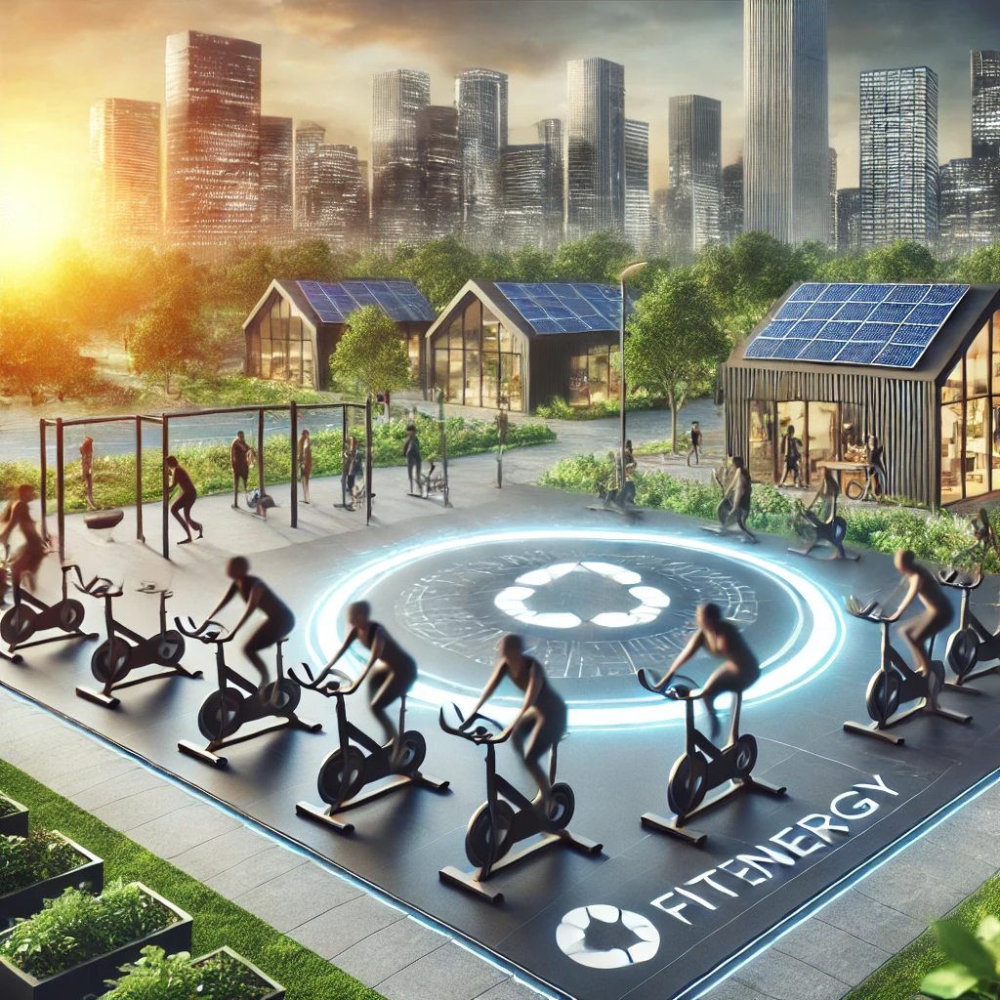

Impacto no Dia a Dia do FitEnergy
O FitEnergy é uma solução inovadora que gera impacto positivo no dia a dia de seus usuários, ao transformar exercícios físicos em energia utilizável. Ao implementar bicicletas geradoras de energia em academias, escolas, parques e residências, contribuímos diretamente para a sustentabilidade e a redução do desperdício energético. Além disso, o FitEnergy promove a conscientização sobre o uso de energias renováveis, incentivando mudanças comportamentais que contribuem para um futuro mais verde e saudável.
